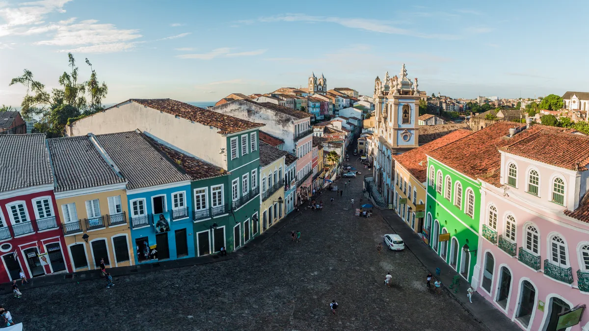

01
Pelourinho e o Centro Histórico
Centro históricoGrátis
andar pelo conjunto; os museus cobram

MTur Destinos · domínio público · via Wikimedia Commons
Valor da entrada
Não existe bilhete para o Pelourinho. É bairro, é rua pública, e o conjunto arquitetônico se vê andando, a qualquer hora, sem pagar nada.
O que cobra são os equipamentos dentro dele — Casa do Carnaval, os espaços do Forte, as igrejas com visitação. Cada um tem a sua ficha nesta página.
O Centro Histórico de Salvador é Patrimônio Mundial da UNESCO desde 1985, e é o maior conjunto de arquitetura colonial portuguesa das Américas.
O que cobra são os equipamentos dentro dele — Casa do Carnaval, os espaços do Forte, as igrejas com visitação. Cada um tem a sua ficha nesta página.
O Centro Histórico de Salvador é Patrimônio Mundial da UNESCO desde 1985, e é o maior conjunto de arquitetura colonial portuguesa das Américas.
Dias em que não funciona
A rua não fecha. Os equipamentos dentro dela têm horário próprio, e a maioria dos museus municipais fecha às segundas-feiras — ponto que vale para quase toda esta ficha.
O Pelourinho tem vida noturna concentrada nas terças, com a programação de rua que o bairro mantém há décadas. É o dia em que o conjunto está mais cheio e mais tocado, e o dia em que menos museu está aberto.
O Pelourinho tem vida noturna concentrada nas terças, com a programação de rua que o bairro mantém há décadas. É o dia em que o conjunto está mais cheio e mais tocado, e o dia em que menos museu está aberto.
Pontos de referência
O Terreiro de Jesus e o Largo do Pelourinho são as duas praças que organizam tudo. A Igreja e Convento de São Francisco fica no Terreiro de Jesus — e está fechada, veja a ficha abaixo. A Casa do Carnaval fica na Praça Ramos de Queirós. A ladeira que desce à Cidade Baixa termina no Elevador Lacerda.
Ver no mapa
Ver no mapa